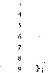
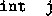
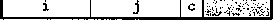

addl $64, %ecx
cmpl $16, %edx
jne .L6
Add 64 to Bptr Compare j:16 If /:, goto loop
正如看到的那样，在循环中，寄存器％ecx是被增加64 (第6行)。机器代码认为每个指针 都指向的一个字节地址，因此在编译指针运算中，每次都应该增加底层数据类型的大小。
®练习题3.38下面的C代码将定长数组的对角线上的元素设置为val:‘
/* Set all diagonal elements to val */
void fix_set_diag(fix_matrix A, int val) {
int i;
for (i = 0; i 〈拉；i++)
A[i] [i] = val;
>
当编译时，GCC产生如下汇编代码
.4 at %ebp-f-8, val at %ebp+12
|
1 |
movl |
8(%ebp), %ecx |
|
2 |
movl |
12(%ebp), %edx |
|
3 |
movl |
$0, %eax |
|
4 |
.L14: |
|
|
5 |
movl |
%edx, (%ecx,7 0 ec |
|
6 |
addl |
$68, %eax |
|
7 |
cmpl |
$1088, °/ 0 eax |
|
8 |
jne |
.L14 |
创建一个c代码程序fix-set-diag-opt,参考这段汇编代码中所使用的优化,风格与图3-28b中的代码- 致。使用含有参数W的表达式，而不是整数常量，使得如果重新定义了 M你的代码仍能够正确地工作。
int i, int’k) {
1 2 3 .4 ‘5 6
7
9
10
/* Compute i,k of fixed matrix product */ int fix_prod_ele (fix_matrix A, fix_matrix B,
! int - , .: ,
int result = 0;
for (j = 0; j < K; j++)
result += A[i] [j] * B[j] [k];
return result;
a) 原始的 C 代码
./* Compute i,k of fixed matrix product */
int fix_prod_ele_opt(fix_matrix A, fixjnatrix B, int i, int k) {
int *Arow = &A[i] [0];
int *Bptr = &B[0] [k];.
int result = 0;
int j;
for (j = 0; j != N; j++) {
result += Arow[j] * *Bptr;
Bptr += N;
}
return result;
> 一 .
b) 优化过的 C 代码
图3-28原代码的和优化过的代码，该代码计算定择数#的矩阵乘积的元素U。编译器会自动完成这些优化
3.8:5变长数組
历史 iE, C语言只支持在编译时就能确定大小的多维数组(对于第一维可能有些例外h程 序员需要变长数组时，不得不用malloc或calloc这样的函数为这些数组分配存储空间，而 且不得不显式地编码，用行优先索弓丨将多维数组映射到一维的数组，如公式（3-1.)所示。ISO 099引人了一种能力,允许数组的维度是表达式，在数组被分配的时候才计算出来,并且最近的 GCG版本支持ISO C99中关于变长数组的大部分规则。:
在变长数组的C販本中,我们将一个数组声明为int . .Ale X ^r 2 ] [exp r 2 ],它可以作为一 个局部变量,也可以作一个函数的参数，.然后在遇到这个声明的时候,囉过对表达式ex P r 2 和 expr 2 求值来确定数组的维度。因此，例如要访问数组的元素/，》我们可以写一个如下 的函数：
int var_ele(int n, int A[n] [n] , int i, int j) ■[
return A [i] [j ];
参数n必须在参数A [n] [n]之前，这样函数就可以在遇到这个数组的时候计算出数组的 维度。 ...
GCC为这个引用函数产生的代码如下所示：
.. .： • -
n at %ebp-rS > A at y o e'bp+12, i at %ebp+i.6', j at %ebp+20
|
1 |
movl |
8<%ebp), %eax - |
■ Get n |
|
2 |
: sail:: |
$2, %eax :.. |
L Compxite 4.*n ' .. ' |
|
3 |
movl |
°/ 0 eax, %edx |
Copy 4*n |
|
4 |
imull |
16(%ebp), %edx |
Compute 4*n*i |
|
5 |
movl |
20(%ebp), %eax |
Get j |
|
6 |
sail |
$2, %eax ., |
Compute 4*j . |
|
7 |
addl"" |
12( 0 / 0 ebp) , %eax |
Compute + 4 沐 j ‘ |
|
8 |
.movl |
(%eax, %'edx), %eax |
' Read from . ,v A 十 4_ * |
0 / + r + y)
正如注释所示，这段代码计算元素/, 7 的地址为x a +4(wH；/)。这个计算类似于定长数组的地址 计算，不同点最 4 )由于加上J参数参数在栈上的地址移动了 r 2 )用了乘法指令计算《 • i (第4行),而不晕用leal指令计算队因此引用变长数组只需要对定长数组做一点几概括。动 态的脲本必须用乘抟指令对/伸展/r倍,而不_用了系列的移位和加法。在一些处理器中,乘法 会招致严重的性能处罚,但是在这种情况下不可避免。 ：
在一个循环中引用变长数组时，编译器常常可以利用访问模式的规律性来优化索弓丨的计箅。 例如，图3- 2 9给出的C代码，它计算两个矩阵A和厚乘积的元素/，*。编译器产生的代码 类似于定长爽駔的代码。实际上，这个代码与图3-28b的择海if类似,除了每次循环中，它对 Bptr ( 指向元素B[j] [k]的榫针；)伸缩变量值^而不晕崗定每值尽
下面是var prod ele循杯的汇编代码 ： ^
一 一 . • '* - . ■-.*
n stored at %ebp+^
Registers: Arov in %esi ， Bptr in %ecx, j in %edx, '
.result in %ebx, %edi holds 4*n
loop:
Get *Bptr
Multiply by Arow[j] Add to result Increment j Add 4 木 ii to Bptr Compare n:j If >, goto loop
.L30:
movl (%ecx), %eax
imull (%esi,%6dx,4), %eax
addl %eax, %ebx
addl $1, %edx
addl %edi, %ecx
cmpi %edx, 8(%ebp>)
jg .L30
我们看到程序既使用了伸缩过的值4« (寄存器％60^)来增加Bptr,也使用了存储在相对 于％ebp偏移量为 8 处的 n 的实际值来检查循环的边界。C代码中并没有体现出需要这两个值, 但是由于指针运算的伸缩，才使用了这两个值。每次循环中，代码从存储器中取出《的值检査 循环是否终止（第7行)。这是二个寄存器溢出(register spilling)的例子：没有足够多的寄存器 来保存需要的临时数据，因此编译器必须把，些局部变量放在存储器中。在这个情况下编译器 选择把w溢出，因为它是一个“只读”的值——在循环中不会改变它的值。因为IA32处理器的 寄存器数量太少，必须常常将循环值溢出到存储器中。通常，读存储器完成起来比写存储器要容 易得多,因此将只读变量溢出是比较合适的。关于如何改进这段代码以避免寄存器溢出，请参见 家庭作业3.61。
/* Compute i,k of variable matrix product */
int var_prod_ele(int n, int A[n][n], int B[n][n], int i, int k) {
int j;
int result = 0;
• .. ... .,.,
for (j = 0; j < n; j++)
result += A[i] [j] * B[j] [k];
8
return result;
>
图3-29计算变长数组的矩阵乘积的元素 i，k 0 编译器执行的优化类似于对定长数组的优化
3.9 异质的数据结构
C语言提供了两种结合不同类型的对象来创建数据类型的机制：结构(structure),用关键字 struct声明，将多个对象集合到一个单位中；联合（union),用关键字union声明，允许用 几种不同的类型来引用一个对象。
3.9.1结构
C语言的struct声明创建一个数据类型，将可能不同类型的对象聚合到一个对象中。结构 的各个组成部分用名字来引用。类似于数组的实现，结构的所有组成部分都存放在存储器中一段 连续的区域内，而指向结构的指针就是结构第一个字节的地址。编译器维护关于每个结构类型的 信息，指示每个字段（field)的字节偏移。它以这些偏移作为存储器引用指令中的位移，从而产 生对结构元素的引用。
给C语言初学者：将一个对象表示为struct
C语言提供的struct数据类型的构造态数（constructor)与C++和Java的对象最为接近。 它允许程序员在一个数据结构中保存关于某个实体的信息，并用名字来引用这些信息。
struct rect { int llx; int lly; int color; int width;
例如，一个图形程序可能要用结构来表示一个长方形：
/* X coordinate of lower-left corner */ /* Y coordinate of lower-left corner */ /* Coding of color */
/* Width (in pixels) */
int height ; /* Height (in pixels) */
}；
可以声明一个struct rect类型的变量r,并设置它的字段值如下：：
struct rect r; r.llx = r.lly = 0; r.color = OxFFOOFF; r.width = 10; r.height = 20;
•. . ' .... .
这里表达式 r • llx 就会选择结构 r 的 llx 字段。
另外，我们可以既声明变量又初始化它的字段在一条语句中：
struct rect r = { 0, 0， OxFFOOFF , 10, 20 >;
. 一个常见的现象是，将指向结构的指针从一个地方传递到另一个地方，而不是复制它们 & 例 如，下面的函数计算长方形的面积，这里，传递给函数的就是一个指向长方形 struct 的指针
int area(struct rect *rp)
. .- ,. ■ •.
\
return (*rp).width * (*rp).height;
>
表达式（ *rp) .width 间接引用了这个指针，并且选取所得结构的 width 字段。这里必须要 用括号，因为编译器会将表达式 *rp.width 解释为 * (rp.width), 而这是非法的。这种 间接引用和字段选取的结合使用非常常见，以至于 C 语言提讲了一种表示法 -> 作为替代。即 rp->width 等价于表达式（ *rp> .width 。例如，我们可以写一个 1 ¾ 数，将一个长方形向顺时 针旋转 90 度：
void rotate_left(struct rect *rp)
/* Exchange width and height */ . ；. . ,• '
int t = rp->height;
rp->height = rp->width; rp->width = t; •
/* Shift to new lower—left corner */ :
rp->llx -= t;
>
C++ 和 Java 的对象比 C 语言中的结构要复杂精细得多，因为它们将一组可以被调用来执行 计算的方法与一个对象联系起来。在 C 语言中，我们可以简单地把这些方法 . 写成普通函数，就 像上面所示的函数 area 和 rotate—left 。
让我们来看看这样一个例子 ， 考虑下面的结构声明 ：
struct rec { int i; int j; int a [3]; int *p；
>； '
这个结构包括4个字段 ——2 个4字节int、 1 个由3个4字节int组成的数组和 1 个4字节的 整型指针，总共是24个字节 ：
|
0 |
4 |
8 |
20 |
||
|
i |
J |
a[0] |
a[l] |
a [2] |
P |
可以观察到，数组a是嵌入到这个结构中的。上图中顶部的数字给出的是各个字段相对于结构 开始处的字节偏移。
为了访问结构的字段，编译器产生的代码要将结构的地址加上适当的偏移。例如，假设 struct rec*类型的变量r放在寄存器％edx中。然后，下面的代码将元素r-；>i复制到元素
movl (°/ 0 edx), %eax Get r->i
movl %eax, 4(%edx) Store in r->j. ,. .,.-
因为字段i的偏移量为 0 ,所以这个字段的地址就是r的值。为了存储到字段j , ；代码要将r的 地址加上偏移量4。
要产生一个指向结构内部对象的指针，我们只需将结构的地址加上该字段的偏移量。例如， 只要加上偏移量 8 + 4 X 1 = 12,就可以得到指针& (r->a [ 1 ]) 。 对于在寄存器%edx中的指针 r和在寄存器%eax中的整数变量i, ' 我们可以用一条指令产生指针& (r->a [i])的值：
Registei's; r in %edx, i in %eax 1 • leal 8(%edx,%eax,4) , %eax Set %eax to &r->a[i]
• . . .... . . ■ - •
最后举一个例子，下面的代码实现的是语句：
• ； ： r->p = &r->a[r->i + r->j];
开始时r在寄存器％edx中：
movl 4(%edx), %eax Get r~>j
addl (%edx), %eax Add r~>i
i leal 8 (%edx, %eax, 4) , %eax Compute &r->a[r->i + r->j]
movl °/ 0 eax, 20(%edx) Store in r~>p . ;
综上所述，结构的各个字段的选取完全是在编译时处理的。机器代码不包含于字段声明或 字段名字的信息。
_练习题3.39考虑下面的结构声明： ： 一 •
struct prob {
int *p; …
struct { # '
-•int x; int y;
} s;
struct prob *next;
>；
这个声明说明一个结构可以嵌套在另一个结构中，就像数组可以嵌套在结构中、数组可以嵌套在数组 中一样。
下面的过程（省略了某些表达式）对这个结构进行操作：
void sp_init(struct prob *sp)
. sp->s.x .= ;
sp->p ’ = 5 '——一 ； . . .：, .. . .:
sp->next = — ; -.、
下列字段的偏移量是多少（以字节为单位）？
P:
next
这个结构总共需要多少字节?
编译器为sp_init的主体产生的汇编代码如下：
|
sp at %ebp+S |
|
|
1 movl |
8(%ebp), %eax |
|
2 movl |
8(%eax), %edx |
|
3 movl |
%edx, 4(%eax) |
|
A leal |
4(%eax), %edx |
|
5 movl |
%edx, (%eax) |
|
6 movl |
%eax, 12(%eax) |
|
根据这些信息， |
填写sp_init代码中缺失的表达式。 |
3.9.2 联合
联合提供了一种方式，能够规避C语言的类型系统，允许以多种类型来引用一个对象。联 合声明的语法与结构的语法一样，只不过语义相差比较大。它们是用不同的字段来引用相同的存 储器块。
考虑下面的声明：
struct S3 { char c; int i [2]; double v;
union U3 { char c; int i [2]; double v;
在一台IA32 Linux机器上编译时，字段的偏移量、数据类型S3和U3的完整大小如下：
类型 |
civ |
大小 |
|
S3 |
0 4 |
12 |
20 |
U3 |
0 0 |
0 |
8 |
(稍后会解释S 3 中i的偏移量为什么为 4 而不是 1 ,而且我们还会讨论对于一台运行Microsoft Windows的机器为什么结果会不同。）对于类型union U3*的指针p, p->c、p->i [ 0 ]和p->v 引用的都是数据结构的起始位置。还可以观察到，一个联合的总的大小等于它最大字段的大小。
在一些下上文中，联合十分有用。但是，它也引起一些讨厌的错误，因为它们绕过了 C语 言类型系统提供的安全措施。一种应用情况是，我们事先知道对一个数据结构中的两个不同字段 的使用是互斥的，那么将这两个字段声明为联合的一部分，而不是结构的一部分，以减小分配空 间的总量。
例如，假设我们想实现一个二叉树的数据结构，每个叶子节点都有一个double类型的数 据值，而每个内部节点都有指向两个孩子节点的指针，但是没有数据。如果声明如下：.
struct NODE_S {
struct NODE_S *left; struct NODE_S *right; double data;
那么每个节点需要16个字节，每种类型的节点都要浪费一半的字节。如果我们声明一个节点如下:
union N0DE.U { struct {
union N0DE_U *left; union N0DE_U *right;
} internal; double data;
那么，每个节点就只需要 8 个字节。如果 n 是一个指针，指向union NODE *类型的节点，我 们用n->data来引用叶子节点的数据，而用r)->interna：!* • left和n->internal • right 来引用内部节点的孩子。 '
然而，如果这样编码 ， 就没有办法确定一个给定的节点到底是叶子节点 ， 还是内部节点。常 用的方法是引入一个枚举类型，定义这个联合中可能的不同选择，然后再创建一个结构 ， 包含一 个标签字段和这个联合：
typedef enum { N_LEAF, N_INTERNAL > nodetype_t;
struct NODE_T {
nodetype_t type; union i
struct {
struct N0DE_T *left; struct N0DE_T *right;
internal; double data;
info;
>； -
这个结构总共需要 12 个字节：type是4个字节，info • internal . left和info . internal . right各要4个字节 ， 或者是info .data要 8 个字节。在这种情况下，相对于给代码造成的麻 烦，使用联合带来的节省是很小的。对于有较多字段的数据结构，这样的节省会更加吸引人。 联食还可以用来访问不同数据类型的位模式。例如，下面这段代码返回的是float作为
.. , .■ _ ■ ' 1 . I . . . . ■ ■ ''*■,： ■
unsigned的位表示： .、•
' • ' . * . . . ' • ^ .'
I unsigned fXoat2bit(float f)

union {
.float f; •： ：. :.
unsigned u;
temp; temp . f = f;
return temp . u;
• ... ‘ ...
* . - - - . • ' . ' . 1 ■
在这段代码中 , 我们以一种数搪类型来存储联合中的参数 ， 又以另一种数据类齒来访问它。有趣
的是，为此过程产生的代码与为下面这个过程产生的代码是一样的：
unsigned copy(unsigned u)
{
return u;
}
这两个过程的主体只有一条指令：
movl 8(%ebp),%eax
这就证明机器代码中缺乏类型信息。无论参数是一个float,还是一个unsigned,它都在 相对％ebp偏移量为 8 的地方。过程只是简单地将它的参数复制到返回值 ， 不修改任何位。
当用联合将各种不同大小的数据类型结合到一起时，字节顺序问题就变得很重要了。例 如，假设我们写了一个过程，它以两个4字节的unsigned的位的形式，创建一个 8 字节的 double ：
double bit2double(unsigned wordO, unsigned wordl)
{
union {
double d;
unsigned u[2];
} temp;
7
temp.u[0] = wordO;
temp.u[l] = wordl;
return temp.d;
>
在IA32这样的小端法机器上 ， 参数wordO是d的低位4个字节 ， 而wordl是高位4个字 节。在大端法机器上，这两个参数的角色刚好相反。
®练习题3.40假设给你个任务，检查一下C编译器为结构和联合的访问产生正确的代码。你写了下面 的结构声明：
typedef union { struct {
short v; short d; int s;
tl; struct {
int a [2]; char *p;
t2;
u_type;
你写了一组具有下面这种形式的函数 ' '
void get(u_type *up, TYPE *dest) {
*dest = EXPR;
.> . -
•这组函数有不一样的访问表达式EXPR，而且根据EXPR•的类型来设置目的数据类型TYPE。然后再检 查编译这些函数时产生的代码，看看它们是否与你预期的一样。
假设在这些函数中,up和dest分别被加载到寄存器％eax和％edx中.。填写下表中的数据类型TYPE,
并用1〜3条指令序列来计算表达式，将结果存储到dest中。斌着只用寄存器％eax和％edx,不够用的 时候，再用寄存器％ecx。
EXPR |
TYPE |
Code |
up->tl.S |
int |
movl 4(%eax) , %eax movl %eax, (°/ 0 edx) |
up->tl. V &up->tl.d |
||
|
|
||
up->t2. a |
||
up->t2. a[up->tl.s] |
||
*up->t2.p |
||
数据对齐
许多计算机系统对基本数据类型合法地址做出了一些限制，要求某种类型对象的地址必须是 某个值尺（通常是 2 、4或 8 )的倍数。这种对齐限制简化了形成处理器和存储器系统之间接口 的硬件设计。例如，假设一个处理器总是从存储器中取出 8 个字节，则地址必须为 8 的倍数。如 果我们能保证将所有的double类型数据的地址对齐成 8 的倍数，那么就可以用一个存储器操 作来读或者写值了。否则，我们可能需要执行两次存储器访问，因为对象可能被分放在两个 8 字 节存储器块中。
无论数据是否对齐，IA32硬件都能正确工作。不过，Intel还是建议要对齐数据以提高存储 器系统的性能。Linux沿用的对齐策略是， 2 字节数据类型（例如short)的地址必须是 2 的倍 数，而较大的数据类型（例如int、int*、float和double)的地址必须是4的倍数。注意， 这个要求就意味着一个short类型对象的地址最低位必须等于 0 。类似地，任何int类型的对 象或指针的地址的最低两位必须都是 0 。
强制对齐的情况
对于大多数IA32指令来说，保持数据对齐能够提高效率，但是它不会影响程序的行为。另 一方面，如果数据未对齐，有些实现多媒体操作的SSE指令就无法正确地工作。这些指令对16 字节数据块进行操作，在SSE单元和存储器之间传送数据的指令要求存储器地址必须是16的倍 数。任何试图以不满足对齐要求的地址来访问存储器都会导致异常（exception),默认的行为是 程序终止。
因此IA32的一个惯例是，确保每个栈帧的长度都是16字节的整数倍。编译器就可以在栈 帧中以每个块的存储都是16字节对齐的方式来分配存储。
Microsoft Windows 的对齐
Microsoft Windows对齐的要求更严格 任何尺字节基本对象的地址都必须是[的倍数,
K=2, 4或者 8 。特别地，它要求一个double或者long long类型数据的地址应该是 8 的倍 数。这种要求提高了存储器性能，而代价是浪费了一些空间。Linux的惯例是 8 字节数据在4字 节边界上对齐，这可能对i386很好，因为过去存储器十分缺乏，而存储器接口只有4字节宽。 对于现代处理器来说，Microsoft的对齐策略就是更好的选择。在Windows和Linux上，数据类 型long double都有4字节对齐的要求，为此GCC产生的IA32代码分配12个字节（虽然实 际的数据类型只需要 10 个字节）。
确保每种数据类型都按照指定方式来组织和分配，即每种类型的对象都满足它的对齐限制， 就可保证实施对齐。编译器在汇编代码中放入命令，指明全局数据所需的对齐。例如，3、 6 、7 节中的跳转表，汇编代码声明的第 2 行包含下面这样的命令：
. align 4
这就保证了它后面的数据（在此，是跳转表的开始）的起始地址是4的倍数。因为每个表项 长4个字节 ， 后面的元素都会遵守4字节对齐的限制。
分配存储器的库例程（例如malloc)的设计必须使它们返回的指针满足运行机器最糟糕情 况的对齐限制，通常是4或者 8 。对于包含结构的代码，编译器可能需要在字段的分配中插入间 隙，以保证每个结构元素都满足它的对齐要求。而结构本身对它的起始地址也有一些对齐要求。
比如说，考虑下面的结构声明：
struct S1 { int i; char c;

假设编译器用最小的9字节分配，画出图来是这样的：
偏移j 45 9
内容丨 i 丨。| J
它不可能满足字段i (偏移为 0 )和j (偏移为5)的4字节对齐要求。编译器在字段c和j之 间插入一个3字节的间隙（用阴影表示)，改后的图如下：
偏移 j 45 8 12
内容 i 土 j
结果，j的偏移量为 8 ,而整个结构的大小为 12 字节。此外，编译器必须保证任何struct S1*类型的指针p都满足4字节对齐。用我们前面的符号，让指针p的值为;c p 。那么，x p 必须 是4的倍数。这就保证了 p->i (地址x p )和p->j (地址jc p + 8 )都满足它们的4字节对齐要求。
另外，编译器结构的末尾可能需要一些填充，这¥结构数组中的每个元素都会满足它的对齐 要求。例如，考虑下面这个结构声明：
struct S2 i
char c;
如果我们将这个结构打包成9个字节，只要保证结构的起始地址满足4字节对齐要求，我们仍然 能够保证满足字段i和j的对齐要求。不过，考虑下面的声明••
struct S2 d[4];
分配9个字节，不可能满足d的每个元素的对齐要求，因为这些元素的地址分别为x d 、x d + 9、 jc d + 18和:c d + 27。相反地，编译器会为结构S2分配12个字节，最后3个字节是浪费的空间：
偏移0 4 8 9 12

这样一来，d的元素的地址分别为;c d 、x d + 12 、〜+ 24和〜+ 36。只要;^是4的倍数，所有的 对齐限制就都可以满足了。
_练习题3.41对下面每个结构声明，确定每个字段的偏移量、结构总的大小，以及在Linux/IA32下它 的对齐要求。
struct PI { int i; char c; int j; char d; };
struct P2 { int i; char c; char d; int j ; ，
struct P3 { short w[3] ; char c[3] >;
struct P4 { short w[3] ; char *c[3]
struct P3 { struct PI a [2] ; struct P2 *p };
®练习题3.42对于结构声明
|
struct { |
|
|
char > |
Ka |
|
short |
b |
|
double |
c |
|
char |
d |
|
float |
e |